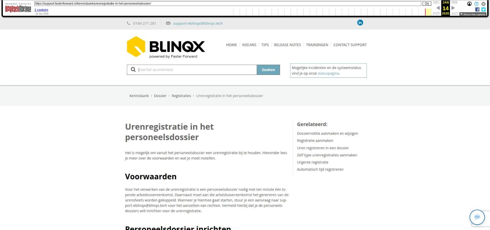

ADN batch financieel verwerken

Tekstinhoud
Title: ADN batch financieel verwerken | Support
URL: https://web.archive.org/web/20260114004243/https://support.fasterforward.nl/kennisbank/4-financieel-verwerken/
Source element: <article>
---
ADN batch financieel verwerken
Bij het afronden van de batch worden alle losse vergoedingen als één post geboekt. Dit op de rekening-courant van de maatschappij. Hieronder lees je hier meer over.
Afronden batch
Bericht bij prolongatie op hoofdvervaldatum
Specificaties
Boekingen zichtbaar in het dossier
Onbekende ontvangsten
Handmatige boekingen aanmaken
Afletteren ontvangsten rekening-courant verzekeraars
Verschil tussen het ontvangen en het betaalde bedrag
Afronden batch
De boeking(en) worden gemaakt als de batch word afgerond met de knop 'Controlelijst afronden' in de controlelijst. Het kan zijn dat foutief ingestelde instellingen ervoor kunnen zorgen dat de batch niet afgerond kan worden. Is dit het geval dan verschijnt er een melding met daarin de reden waarom de batch niet afgerond kan worden. Dit dient eerst gecorrigeerd te worden om daarna de batch alsnog af te ronden.
Bericht bij prolongatie op hoofdvervaldatum
Het is mogelijk om via de workflow een notificatie te krijgen of de klant te informeren wanneer er een prolongatie op hoofdvervaldatum is verwerkt. Een prolongatie op hoofdvervaldatum is verwerkt bij het afronden van de ADN batch. Na het afronden van de batch krijgt de workflow een seintje. Je kan zelf bepalen wat voor acties er dan uitgevoerd moeten worden, bijvoorbeeld een taak of e-mail aanmaken.
Wil je hiervan gebruik maken? Stuur dan een e-mail naar support-eblinqx@blinqx.tech.
Specificaties
Er wordt één boeking overgemaakt naar de rekening-courant maatschappij. Je wilt natuurlijk wel zien wat voor posten er in dat bedrag zitten. Daarom wordt er na het afronden van de batch een specificatie gemaakt, waarin al deze losse posten staan. Deze specificaties zijn terug te vinden in de ADN inbox tabblad PDF specificaties.
Boekingen zichtbaar in het dossier
Ook komen in de dossiers de boekingen die gemaakt zijn te staan. Dit onder het product onder het tabblad boekingen. Hier komen alle prolongaties, mutaties en handmatige boekingen te staan in de betreffende RC periode. Bij de boekingen staan icoontjes waarop je kan klikken om alle informatie in te kunnen zien:
Vergrootglas = PDF specificatie
Grijze blokjes = de ADN batch
Boekje = het boekstuk waarin de post is geboekt
Het kan zijn dat een post op onbekende ontvangsten is gekomen en dat je dit hebt gecorrigeerd. Deze gecorrigeerde post komt in het dossier onder de RC periode staan waarin die oorspronkelijk hoort. De regel is paars om aan te tonen dat dit een gecorrigeerde post vanuit onbekende ontvangsten is. Een handmatige boekingsregel wordt oranje.
Onbekende ontvangsten
Als er geen polismatch is en de setting staat aan dat je de batch toch kan afronden, dan worden deze posten geboekt op de onbekende ontvangsten. Deze posten kan je corrigeren vanuit de module 'Nog te ontvangen provisie overzicht'. Voor de posten op deze grootboekrekening staat een stekker/koppelicoon.
Als je hier op klikt dan kan je de post koppelen aan de klant en het product en vervolgens de correctieboeking maken. Dan verdwijnt de post op de grootboekrekening onbekende betalingen en komt deze in het betreffende dossier te staan onder het tabblad boekingen. De regel is paars. Omdat het een correctie is, staat het vergrootglasicoon er niet bij, omdat deze post niet is opgenomen in de PDF. De batch en boekingsicoon staat er wel, omdat de post wel uit een batch komt en geboekt is. In de PDF van de nieuwe rekening-courant komt deze gecorrigeerde post wel te staan.
Handmatige boekingen aanmaken
Via het tabblad boekingen in het klantdossier is het ook mogelijk om een handmatige boeking aan te maken. Hiervoor klik je op de knop 'Handmatige boeking aanmaken'.
Je selecteert de juiste polis en vult het provisiebedrag. Ook kan je de boekdatum aanpassen. Je klikt op 'Volgende' om naar het volgende scherm te gaan.
Vervolgens kom je in het scherm waarin de journaalpost automatisch wordt gemaakt. Indien gewenst kan je de bedragen aanpassen. Door op de knop 'Boek' te drukken, boek je de handmatige boeking daadwerkelijk.
Het boekstuk wat wordt aangemaakt krijgt de status voorlopig. Hierdoor is het mogelijk om de boeking nog aan te passen. Wanneer de gekozen boekdatum in een periode valt die niet openstaat in de boekhouding dan wordt de boeking geboekt in de eerstvolgende openstaande periode. Is deze niet aanwezig dan verschijnt er een melding.
Afletteren ontvangsten rekening-courant verzekeraars
Na het afronden van de batch worden de bedragen geboekt. Alle posten worden als één bedrag geboekt op de rekening-courant van de maatschappij. Op jouw bankrekening ontvang je de ontvangsten vanuit de verzekeraar. Dit bankafschrift kan je inlezen in eBlinqx om via deze manier de bedragen met elkaar af te letteren.
Het kan zo zijn dat er over dezelfde periode 2 batches van dezelfde verzekeraar zijn binnengekomen. De bedragen van deze batches worden als aparte bedragen geboekt.
De verzekeraar boekt echter het bedrag van deze periode als één bedrag op jouw bankrekening. In eBlinqx kan je dit dan als volgt afletteren:
Je gaat naar Financieel – Boeking invoeren – tabblad Boekingen. Hier open je het bankboek en het betreffende boekstuk.
In het boekstuk zoek je de regel op van het ontvangen bedrag. In deze regel ga je naar het bedrag en je klikt op F6.
In het volgende scherm doorloop je meerdere stappen:
Je vult in de velden 'Boekdatum vanaf' en 'Boekdatum tot' de periode in waar de betaling over gaat
Vervolgens klik je op 'Zoeken'
Daarna klik je op 'Alles op deze pagina selecteren'
Vervolgens op 'Opslaan'
Ook moet je vervolgens nog heel het boekstuk opslaan.
Verschil tussen het ontvangen en het betaalde bedrag
Het is mogelijk om verschillen te hebben tussen het ontvangen en betaalde bedrag. Je zal dan het verschil uit moeten zoeken en inboeken zodat je het RC saldo van de periode kloppend krijgt en vervolgens de betaling volledig kan afboeken. Gaat het over een klein verschil en wil je dat niet uitzoeken, dan kan je de betaling met de openstaande posten afboeken, maar je krijgt dan een verschil in je bankboekstuk. Dat verschil kan je opnemen op een nieuwe regel door naar de laatste regel in het boekstuk te gaan (dus niet op de eerste pagina indien hij meerdere pagina's heeft) en vanaf de laatste regel enter te klikken. Dan wordt het verschil op de nieuwe regel opgenomen en daar kan je het wegboeken op een verschillenrekening bijvoorbeeld.
Laatste update: 15 oktober 2025
Was deze informatie nuttig?
Ja Nee